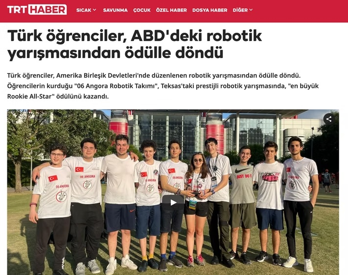
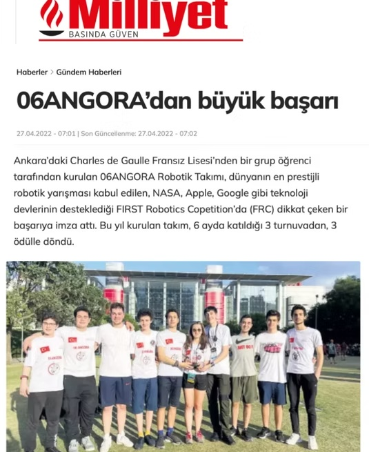
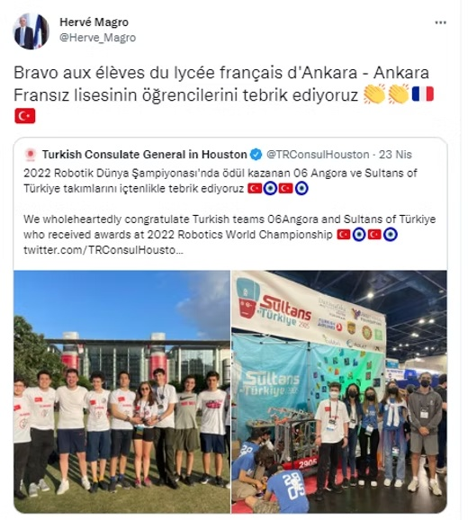
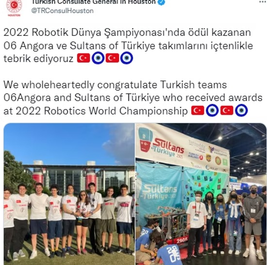
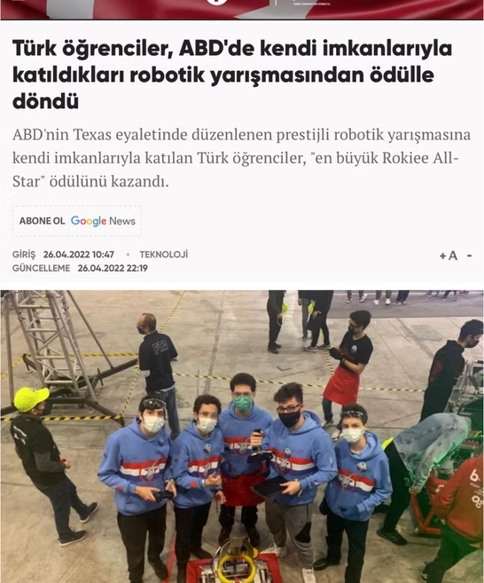

On the Press

Turkish Students Secure Prestigious Award at U.S. Robotics Competition

Major Breakthrough Achieved by 06ANGORA Team

Official Commendation for the Students of Lycée Français Charles de Gaulle

Turkish Robotics Teams Recognized at the 2022 World Championship

Self-Funded Turkish Students Triumph at International Robotics Tournament
06 Angora's Triumph at the World Championship
01 MAY 2022 | TURKISH A NEWS
World Championship Coverage of 06 Angora Robotics Team
30 APR 2022 | TRT HABER
World Championship Feature on 06 Angora
30 APR 2022 | NTV
FIRST® Robotics Competition Izmir Regional Interview
25 JAN 2023 | TURKNET
International Hackathon IATHON at Lycée Français Saint Benoît
26 JAN 2023 | CAN KOÇAK
Presentation at the Turkish Presidency: National Sovereignty and Children's Day
25 JAN 2023 | CAN KOÇAK
Vocal Performance at the Turkish Presidency: National Sovereignty and Children's Day
28 AUG 2023 | CAN KOÇAK